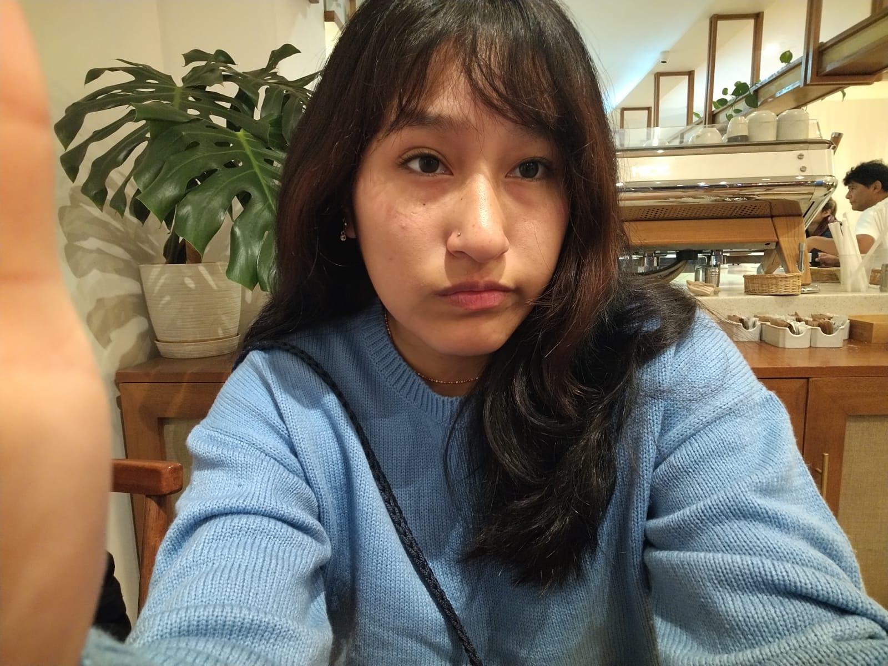

01
WEB / UX
📁
Moviable
Concepto de plataforma de transporte accesible para personas con discapacidad y adultos mayores.
Estudiante de Ingeniería de Sistemas Computacionales
Me gusta convertir ideas en soluciones digitales. Exploro desarrollo de software, bases de datos, redes y herramientas que me permitan construir proyectos útiles y reales.

Un poco de la persona detrás del código.
const sandy = {
carrera: "Ingeniería de Sistemas Computacionales",
ciclo: 8,
enfoque: [
"Programación",
"Sistemas",
"Bases de datos",
"Redes"
],
habilidades: [
"Adaptabilidad",
"Comunicación",
"Trabajo en equipo"
],
meta: "Seguir creciendo 🚀"
};Soy estudiante de Ingeniería de Sistemas Computacionales y disfruto aprender haciendo. Durante mi formación he trabajado en proyectos de programación, bases de datos, análisis de datos, redes y electrónica.
Soy una persona con capacidad de adaptación y aprendizaje rápido, además de creatividad y habilidades organizativas. Valoro el trabajo en equipo y la comunicación efectiva.
Mi objetivo es desarrollarme en el ámbito de la programación y los sistemas computacionales, aplicando mis conocimientos y habilidades para aportar soluciones innovadoras en el campo de la tecnología.
Herramientas que he utilizado y sigo aprendiendo.
Aplicaciones de consola y desarrollo con Visual Studio.
SQL Server, MySQL, consultas, procedimientos y modelado.
HTML, CSS y JavaScript para interfaces y proyectos web.
Cisco Networking Essentials, IPv4, subnetting y configuración básica.
Manejo de herramientas de ofimática para trabajos académicos y profesionales.
Edición básica de fotos y videos para contenido visual.
Ideas que se convirtieron en código, datos y prototipos.
Concepto de plataforma de transporte accesible para personas con discapacidad y adultos mayores.
Sistema de gestión de datos con base de datos y dashboard para análisis de información.
Sistema de inventario desarrollado en C# para gestionar productos, almacenes y operaciones.
Prototipo automático con RTC, servo y pantalla LCD para programar horarios de alimentación.
Diseño de base de datos para administrar información y operaciones de un gimnasio.
Propuesta de sistema para organizar trámites y servicios de una municipalidad.
Lo que he ido construyendo fuera y dentro de las aulas.
Formación en programación, bases de datos, desarrollo de software, redes y tecnologías de información.
Supervisión diaria de actividades comunitarias y apoyo en programas sociales. Registro manual y ordenado de incidentes reportados por los vecinos.
Apoyo en eventos vecinales, trabajo colaborativo con el equipo municipal, comunicación de alertas y coordinación con Policía, Bomberos y Serenazgo ante situaciones de riesgo o emergencia.
Atención a clientes en caja, procesamiento de pagos, cierres de caja, reposición de productos, verificación de inventario e información sobre tarifas, promociones y servicios.
Captura de momentos clave de eventos mediante imágenes y videos con cámara profesional, además del desarrollo y coordinación de eventos de integración y entretenimiento.
Colaboración en edición y publicación de contenido para reflejar la esencia de los eventos y mejorar su visibilidad.
Atención al cliente en caja, procesamiento de pagos en efectivo y tarjetas, control organizado de transacciones diarias y precisión en cierres de caja.
Atención de consultas e información sobre platillos y promociones, contribuyendo a mejorar la experiencia del cliente.
Algoritmos y Programación con PSeInt · Desarrollo de Software con Visual Studio · Cisco Networking Essentials.
Estoy abierta a oportunidades, proyectos y nuevas experiencias de aprendizaje.
sandy@portfolio:~$ echo "Hola 👋"
Puedes encontrarme en mis redes, revisar mi trabajo o contactarme directamente.
Revisa mi CV para conocer mi formación, habilidades y experiencia laboral.
sandy@portfolio:~$